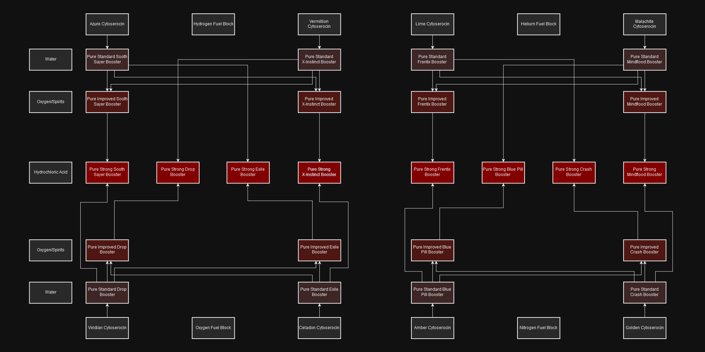

Manufacturing
In the EVE universe, the vast majority of items are manufactured by player characters and traded in a relatively free way in the marketplace. Students of economics will note that these markets are neither perfect nor efficient in the technical senses; volumes of many items are low enough that the market can be (and is) manipulated, and supply of materials and modules is partly provided by loot drops in missions, which can be adjusted without warning by the game developers. Similarly, the developers may adjust the requirements for a manufacturing process, or increase the availability of ore, or otherwise mess in the sandbox.
Nonetheless, manufacturing and selling items can provide interest and ISK profit for the careful and canny player. The player must be aware, however, that there are plenty of items which actually destroy value - that is, there are a great number of T1 items, modules especially, that are worth less than the cost of manufacture. There are many more items which can be sold at a profit, but only in a limited volume in certain markets. Manufacture in these cases may simply be an alternative to hauling stuff between markets.
Skills
The following skills are useful or required for all production that can be done.
Industry(1x) - 4% reduction in manufacturing time per skill level. At least level 1 is required to use most blueprints, and level 3 is required for further manufacturing skills. The speed bonus increases the rate at which you can produce items (and therefore, produce profit).Advanced Industry(3x) - 3% reduction in all manufacturing & research time per skill level. This skill adds not only a fairly substantial further time reduction in manufacturing, but also a time reduction in all research and invention jobs. Whilst less noticeable when building small items individually, these time-savers really add up when doing multiple runs and building large ships.
Increase number of concurrent jobs:
Mass Production(2x) - Allows 1 additional job per level. By default, all characters can run 1 manufacturing job at a time. Training this skill lets you run additional jobs simultaneously from 2 jobs at I up to 6 jobs at V. Any industrialist who wants to create things will need to train this to IV or V fairly early in their plans.Advanced Mass Production(8x) - Allows 1 additional job per level. Once you train Mass Production to V, you can then train Advanced Mass Production, for a further increase in concurrent jobs. Having this skill at IV gives you 10 manufacturing lines (1 + 5 + 4), which is enough for most people. Training to V takes around 28 days, making it only of interest to dedicated manufacturing characters.
Allow remote management of jobs:
Supply Chain Management(3x) - Allows starting jobs remotely. +5 jumps per level. Without training this skill, you can start jobs anywhere in the current system. Each level in this skill gives you the ability to start manufacturing jobs an extra 5 jumps away, to the maximum of 25 jumps at level V (this may include other regions).This skill is more of a convenience skill than a must-have for a budding industrialist - allowing you to manage your production lines for a distance. If you invest in this skill, training to level III or maybe level IV would offer the most return on time investment. Note that you still have to haul the materials and blueprint to the relevant station.
Basics of Production
Production of Tech 1 items - ships, modules, ammunition, rigs or even components - is the simplest of manufacturing tasks, within reach of even the newest player to EVE. Although whether they will actually be able to make a profit is another question entirely. Very few skills are needed for T1 production, and the materials are often fairly easily acquired.
All T1 manufacturing jobs require a blueprint. These come in two forms: originals (BPOs) with infinite runs and copies (BPCs) that can only be run a limited number of times. For most blueprints, a single run of a blueprint will produce a single item, but there are some exceptions - most obviously ammunition, which produces 100 units per run.
Many manufacturers use BPCs, copied from a BPO, to manufacture from, for a variety of reasons, including security and the ability to run multiple production lines. For more details, see Why should I copy my BPOs?
Selecting the item to produce
T1 BPOs are seeded by various NPC traders, with costs varying from 100,000 to 75 billion ISK. This can be a significant cost, especially to new players. Also significant is the amount of research time that may be spent on the blueprint. Selecting a good one versus a bad one is important!
A good item will have these characteristics:
Inexpensive Materials- The material cost should be such that you can reasonably expect to manufacture a decent number of items, and you won't be bankrupt if you lose them while trying to sell them. There isn't a rule on how much cost is too much, but if you need a number then keep the cost of an item below 1% of your net worth. This will not be a problem for players with a large wallet, but can be an issue for new players starting out in manufacturing. Loading the potential BPO into the Industry window will provide an estimate of the material cost.Good Profit Margins- The difference between the selling price and the cost to manufacture should be worthwhile. Be sure to compare the absolute profit (ISK) and percent profit (% of selling price) and make sure both are worth your time. What makes it worth your time? It is up to the individual, but strive for at least 10% per item. Profits of 80% have been witnessed by players as young as 2 months to EVE, but they are rare and tend to disappear.Good Transaction Volume- If you find an item that is extremely profitable but is only sold once per week, then it has poor transaction volume. There is no guarantee that you can capture all (or even most) of the sales of a particular item! To check the volume of an item, use the Market window. If you choose an item, click on the Price History tab. If it shows a graph, you can see daily sales volume by clicking the Show Table button in the bottom of the window. This will show you how many of an item were sold each day in the region over the past year.
There are many items that do meet all three requirements. Finding them is a matter of a lot of research time looking for items that meet your criteria. Typically it is easiest to search through the market tab looking for items with sufficient volume, then go to the BPO research calculator to compare the prices to selling volumes. Once you choose a blueprint, the BPO Research Calculator will also tell you what faction sells the BPOs you have chosen.
Running Jobs
Installing a manufacturing job is easy. Select the blueprint, select job type as manufacturing job, set the amount of runs and press start. If using containers or corporation hangars you may need to change the input and output locations.
Once you have a blueprint and materials ready, and decided which system to manufacture in, it's time to produce your goods. Most of the time you'll be using an NPC station to manufacture goods.
Engineering complexes and citadels with the appropriate service module online can also be used to manufacture goods. Engineering complexes provide a modest material savings (1%) and significant time savings (15% - 30% depending on size) over NPC stations; these savings can be further increased for certain categories of goods by installing the appropriate rigs to the structure.
Gather the materials and BPO (or BPC) in your station hangar, and open the industry window. You will need to find your blueprint using the drop-down selection boxes. Click the blueprint to install it to the main industry window, or you can start the job from the blueprint in your hangar.
Simply choose the number of runs, check the input/output locations (most of the time this will simply be Item Hangar, but if you have your own personal corporation or use containers for sorting you may need to change them) and press Start.
While the job is running, you can check on its progress using the same Industry window, in the Jobs tab. Select the Jobs tab, and a list of your currently running jobs will be displayed. You can cancel the job if you want your blueprint back for some reason, but none of the materials used or installation costs will be refunded.
Finally, once the job is completed, job listed in the Jobs tab will contain a large Deliver button instead of a time remaining display; press this and the results & blueprint will be returned to the station.
Beware of rounding "errors"!
A particular problem that can quickly cost you a million ISK or two when manufacturing T2 items is the rounding that is applied as an effect of material efficiency. The rounding is done per job instead of per run. a single industry job with 3 runs can use less material than 3 single jobs from the same blueprint!
Additionally the manufacturing job will require at least one item of each type per run. This is most notable when the job requires one item per run. With 100 runs and 10% material reduction you would assume that you would need 90 items but you still need 100 items.
Booster Production
Boosters are manufactured from mytoserocin and cytoserocin gas harvested from clouds in cosmic signatures found in known space. These signatures only spawn in specific regions of New Eden. These gasses are distinct from the fullerine gasses found in wormholes, which are used to create Tech III ships and subsystems.
Booster production requires following skill:
Drug Manufacturing- Required for manufacturing drugs.
If you also want to refine the gas used for drug manufacturing you will need the relevant reaction skills.
Processing Gas
Gas must be processed into pure booster material before the final product is created. This is done using reactors at a refinery structure.
Pure boosters use Simple Reactions at a Standup Biochemical Reactor I. These structures can only be installed at a refinery in .4 or lower security space. Besides the gas, the reactions also require an additional unit, which varies based on the grade of the booster. Synth reactions need Garbage, Standard reactions require Water, Improved reactions require either Spirits or Oxygen, depending on the exact product, and Strong reactions require Hydrochloric Acid.
Booster Creation
Boosters themselves are created as a normal manufacturing job in industry window. This has no security requirements, and can be done in high security space. Manufacturing the final booster product requires the pure booster material of the desired grade covered in the above section, megacyte, and an appropriate blueprint.
Tech II Production
T2 manufacturing requires T2 BPCs, which are 'invented' through the invention process. This is a chance-based process, requiring a lot of skill investment in advance, and you are not guaranteed to get a T2 BPCs at the end of it. Some T2 manufacturers do not invent, but instead merely buy T2 BPC packs from dedicated inventors. See Invention for more details on the invention process.
There are also limited number of extremely valuable tech II blueprint originals in circulation. These were seeded years ago in the so called "Blueprint lottery" and new tech II blueprint originals will never enter the game.
T2 production also requires much wider range of materials compared to tech I production.
Skills Required
The main difference between tech 2 and tech 1 manufacturing is the increased skill requirement, and the many more different types of input materials required. Not all T2 manufacturers will have all these skills, some may specialize in (for example) constructing only Minmatar ships, and thus have only those skills. Most of these skills are the same as those required for invention. Different blueprints require these skills at different levels, but in general: the larger the ship or item, the higher skill level will be required. Most of these skills also give a 1% time efficiency bonus per level.
Advanced Industrial Ship Construction(3x)Advanced Large Ship Construction(8x)Advanced Medium Ship Construction(5x)Advanced Small Ship Construction(2x)
Required to build T2 ships of the relevant size. These skills are not required for invention, only construction.
Amarr Starship Engineering(5x)Caldari Starship Engineering(5x)Gallente Starship Engineering(5x)Minmatar Starship Engineering(5x)
Required to build T2 ships of the relevant race.
Mechanical Engineering(5x)
Required to build T2 ships of any size & race.
Electromagnetic Physics(5x)Electronic Engineering(5x)Graviton Physics(5x)High Energy Physics(5x)Hydromagnetic Physics(5x)Laser Physics(5x)Mechanical Engineering(5x)Molecular Engineering(5x)Nanite Engineering(5x)Nuclear Physics(5x)Plasma Physics(5x)Quantum Physics(5x)Rocket Science(5x)
Two of these skills are required to build each T2 (non-ship) item. These are the same as the skills required to invent that T2 item. Consult a blueprint to find out which skills at which level are required to build that item. Example (see right): Nanofiber Internal Structure II BPC requires Nanite Engineering and Molecular Engineering.
T2 Required Materials
Whereas the majority of T1 production requires only minerals, the range of input materials required hugely expands for T2 production - moons, planets, items and components are all potential sources of materials for T2 production. Not all T2 blueprints require every single source of input material, but one particular additional input required for most T2 manufacturing is a T1 item of the similar type. For example building a T2 nanofiber requires a single T1 nanofiber, some Remote Assembly Modules (Armor/Hull Tech R.A.M.s), extra minerals (Morphite) and some planetary materials (Construction Blocks).
Moon Materials
Moon materials are produced via moon mining, which is an activity only possible in 0.5 security space and lower, and requires a Refinery anchored next to the moon mining beacon you wish to mine from and fitted with Moon Drill module. It is also very lucrative, and some moons are fought over regularly, so being able to defend your structure is necessary if you wish to maintain your moon mining operation. Moon mining is an activity carried out on the corporation or alliance level, and thus generally not possible (to run a profitable operation) as a solo player.
Moon materials - basic elements such as Chromium, Technetium and Tungsten, which can be found in the Reaction Materials > Raw Moon Materials section of the market - are mined and then reacted together in the refinery to produce advanced moon materials - such as Tungsten Carbide, Fullerides and Fermionic Condensates. It is possible however to run a profitable reaction only operation: buying the raw moon materials on the market, reacting them together in your refinery (and it does have to be in lowsec or nullsec) and then selling or using the advanced moon materials.
These advanced materials are sometimes used directly in T2 item manufacturing, but more often used in the construction of advanced components, which are then in turn used in T2 manufacturing.
Components
Advanced components are the most common type, and are manufactured exclusively from moon materials. They are used in the majority of T2 manufacturing, T2 ships in particular using large numbers of multiple different types of component. Components come in Amarr, Caldari, Gallente and Minmatar flavours, with the icon coloured according to which race they 'belong' to. The advanced component manufacturing process is just like any other T1 manufacturing process, except that the inputs are moon materials, and one particular science skill (see list of T2 skills required above) is required for each component.
Tech 2 items frequently use these racial components as well as ships, and the particular racial component(s) they require will be the same as the racial encryption skill and the racial data interface item required to invent the BPC.
Robotic Assembly Modules (R.A.M.s
Robotic Assembly Modules, more commonly known as R.A.M.s, are robotic assembly units that build things for you. They are manufactured from minerals just like any other T1 manufacturing process. Nine different R.A.M.s exist, for different types of construction: Starship Tech, Ammunition Tech, Cybernetics, etc.
Planetary Materials
Planetary Interaction can be done with the same character you might use for production, and thus save you expenditure on the market (although, just like minerals you mine are not free, neither are planetary materials you produce).
T3 Production
Tech 3 ships, also known as Strategic Cruisers and tactical destroyers have their own specialised construction process, which is a combination of invention using ancient relics from relic sites, and including datacores gathered from data sites - to discover the BPCs for hulls and subsystems, and then built using those BPCs with materials gathered from within w-space - including gas clouds (which are reacted in a reactor array), Sleeper salvage and normal minerals.
Capital Ship Production
Capital ship construction can be an extremely lucrative business, although requiring a large initial investment, and, depending on what capital you are constructing, may need to be based in low-sec, or even sovereign null-sec.
Capital Ship Construction(14x) is required in order to build capital ships or capital ship components. The following levels unlock the following blueprints:Level 1: all capital ship components, all capital modules, freighters, Orca
Level 3: carriers, dreadnoughts, fighters, fighter-bombers
Level 4: supercarriers, jump freighters, Rorqual
Level 5: titans
Capital ships are built from capital ship components, which are in turn manufactured from minerals. There is no restriction on where capital ship components can be built, and apart from the increased skill requirement there is no difference from other T1 manufacturing. Freighters and the Orca can then be constructed in any manufacturing facility using the relevant T1 ship BPO or BPC, from the components previously built.
Carriers, dreadnoughts & the Rorqual are capital ships that may not enter hi-sec, and so you cannot build them in hisec either. They can be constructed in any station in lowsec or nullsec with a manufacturing facility, but apart from that restriction, are constructed in the same way as freighters or the Orca.
These ships may also be constructed at a Large or Extra Large size citadel or engineering complex (i.e. Fortizar, Azbel, Keepstar, or Sotiyo) with a Standup Capital Shipyard I module installed. This module is installable in low-sec and null-sec only. Engineering complexes, and structures with appropriate rigs, will provide their usual cost reductions as applicable.
Super-capital Construction
Super-carriers and titans cannot even dock in NPC stations, never mind enter hi-sec, and so you cannot build them in stations either. They must be built at a Sotye engineering complex with a Standup Supercapital Shipyard I service module. installed. This module may only be brought online in systems where the complex owner has sovereignty, and has installed a Supercapital Construction Facilities infrastructure upgrade. Super-capital construction takes an exceedingly long time).
Note that while appropriately fit Sotiyo engineering complexes can build and launch super-capitals, such ships will not be able to re-dock once launched. The only structures that support supercapital docking are Keepstar citadels.
Because super-capital ship construction must take place in a player-owned structure, this means supercapital ships under construction are vulnerable to attack, unless you can defend your infrastructure effectively. Many titans have been 'aborted' by a hostile force destroying the POS and assembly array during construction.
Resources and Links
All data and information was collected from the Eve University Wiki site visit them for way more information regarding in game mechanics and topics.
This webpage uses information from the popular online MMORPG EVE Online which can be played free of charge with the option of a paid subscription.
COPYRIGHT NOTICE
EVE Online and the EVE logo are the registered trademarks of CCP hf. All rights are reserved worldwide. All other trademarks are the property of their respective owners. EVE Online, the EVE logo, EVE and all associated logos and designs are the intellectual property of CCP hf. All artwork, screenshots, characters, vehicles, storylines, world facts or other recognizable features of the intellectual property relating to these trademarks are likewise the intellectual property of CCP hf. CCP hf. has granted permission to [insert your name or site name] to use EVE Online and all associated logos and designs for promotional and information purposes on its website but does not endorse, and is not in any way affiliated with, [insert name or site name]. CCP is in no way responsible for the content on or functioning of this website, nor can it be liable for any damage arising from the use of this website.